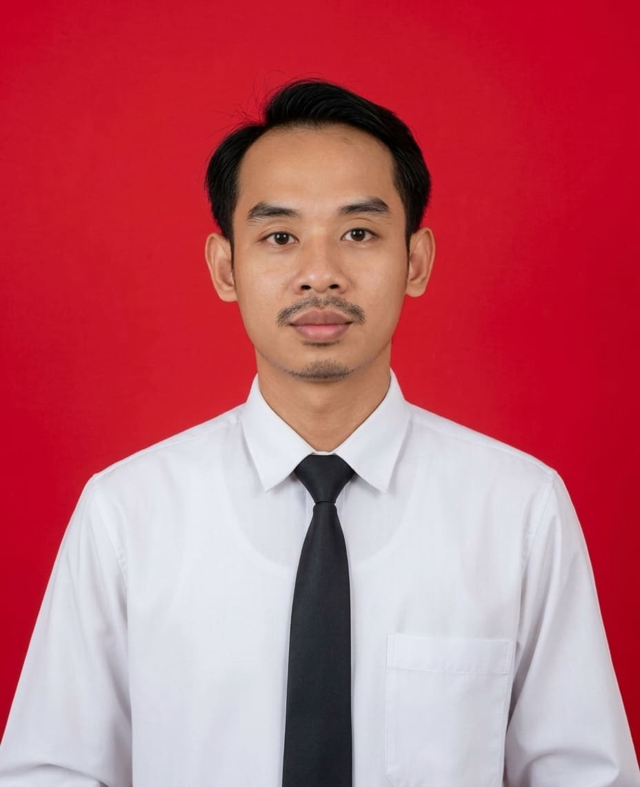

SMP NEGERI 2 MODO LAMONGAN• Dinas Pendidikan Kab. LamonganKurikulum MerdekaFase D
SMP NEGERI 2 MODO LAMONGAN• Dinas Pendidikan Kab. LamonganKurikulum MerdekaFase DKELAHIRAN
PANCASILA
“Belajar Pancasila, Mengukir Karakter Bangsa”
Peserta didik mampu memahami sejarah kelahiran Pancasila. Indikator ketercapaian:
📜Menjelaskan latar belakang dibentuknya BPUPKI pada masa pendudukan Jepang.🗣️Mengidentifikasi usulan dasar negara dari Muhammad Yamin, Soepomo, dan Ir. Soekarno.🤝Menguraikan peran Panitia Sembilan dan lahirnya Piagam Jakarta (22 Juni 1945).🏛️Menganalisis pengesahan Pancasila sebagai dasar negara oleh PPKI (18 Agustus 1945).🇮🇩Menghargai nilai musyawarah dan persatuan para pendiri bangsa dalam kehidupan sehari-hari.
1. Lahirnya BPUPKI
Jepang yang mulai terdesak menjanjikan kemerdekaan. Badan Penyelidik Usaha Persiapan Kemerdekaan Indonesia dibentuk 29 April 1945, diketuai dr. K.R.T. Radjiman Wedyodiningrat.
2. Sidang I BPUPKI
29 Mei–1 Juni 1945: Moh. Yamin, Soepomo, dan Ir. Soekarno mengemukakan gagasan dasar negara. Pada 1 Juni, Soekarno menyebut usulannya “Pancasila”.
3. Panitia Sembilan
Dibentuk untuk merumuskan hasil sidang. Pada 22 Juni 1945 lahir naskah Piagam Jakarta (Jakarta Charter) yang memuat rumusan dasar negara.
4. Sidang II BPUPKI
10–17 Juli 1945 membahas rancangan UUD, wilayah negara, dan bentuk negara. Setelah itu BPUPKI dibubarkan dan diganti PPKI.
5. Proklamasi Kemerdekaan
Setelah Jepang menyerah, Soekarno-Hatta memproklamasikan kemerdekaan Indonesia pada 17 Agustus 1945 di Jalan Pegangsaan Timur 56, Jakarta.
6. PPKI Mengesahkan
18 Agustus 1945 PPKI mengesahkan UUD 1945 dan Pancasila sebagai dasar negara. Tujuh kata dalam Piagam Jakarta diganti demi persatuan bangsa.
Klik titik pada linimasa!
Pilih peristiwa atau tekan ▶ Putar Otomatis untuk menelusuri sejarah.

Guru PPKn • SMP Negeri 2 Modo Lamongan
Fasilitator Pembelajaran Kurikulum Merdeka Fase D
“Pendidikan adalah senjata paling ampuh untuk membentuk karakter bangsa yang berpancasila.”